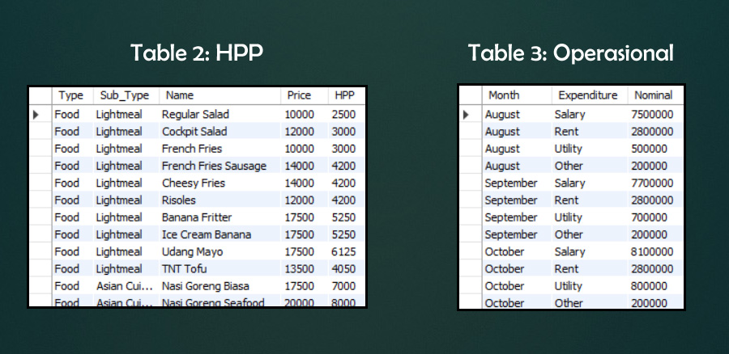

Cafe Dataset Analysis
Uncover data with mySQL queries
Introduction:
During the period spanning 2015 to 2016, I, along with three friends, ventured into the business realm by establishing a cafe. Positioned as a provider of affordable food and beverages, our target demographic was university students. The venture sustained itself for 18 months until we made the decision to sell the cafe or transfer its ownership to other entrepreneurs.
Throughout our journey, we encountered several challenges, notably a lack of understanding of customer behavior and ineffective data management practices. My friends and I often resorted to manual data entry, primarily using Excel or sometimes resorting to pen and paper, resulting in exhaustive and time-consuming processes. Reflecting on our experience, we recognize the potential efficiency gainshad we employed MySQL for data management, enabling us to analyze customer patterns more effectively.
This is our dataset from 2015, comprising three tables: "Penjualan" for daily sales, "HPP" for the cost of goods sold (COGS) by sub-menu type, and "Operasional" containing a summary of monthly expenses:
Thus, in this, I'll utilize the data from our cafe during that period to showcase the benefits of MySQL in comprehensively understanding our data and deriving valuable insights from it. Hence, we will create some SQL queries from that.
Scenario 1:
1. Assume we aim to determine which day generates more revenue compared to others.
2. We aim to pinpoint the specific dates associated with generated revenue.
3. We seek to identify the top 10 best-selling food menu items.
4. We want to find monthly revenue
5. We seek to highlight most sold items
Answer (Single Table Queries):
(Hover right or left arrow)
Insights:
MySQL offers the advantage of efficient querying capabilities, allowing for quick and precise retrieval of revenue data based on specific criteria such as the day of the week. Additionally, its ability to handle large datasets and perform complex calculations natively within the database provides a more streamlined and scalable solution compared to Excel.
Scenario 2:
1. Finding gross profit.
2. Finding total sales per category
Answer (Join Queries):
Rather than engaging in exhaustive and time-consuming manual inputting into Excel and using calculators, MySQL offers an efficient method for joining two tables seamlessly.
Scenario 3: Finding net-profit/loss using Three-way Join Queries
Moreover, in our scenario, had we utilized MySQL, there would be no need to input data from three separate tables into a fourth table to calculate our net profit. With MySQL, this task could be accomplished through three-way joined queries, streamlining the process significantly.
In the end, MySQL's relational database structure facilitates efficient organization and retrieval of sales data, enabling cafes to track transactions, analyze trends, and make data-driven decisions effectively.